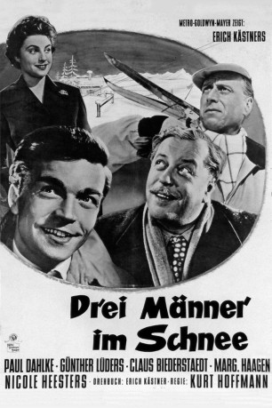

#5299 Drei Männer im Schnee
 
 IMDB-Wertung: 7.7 / 10
IMDB-Wertung: 7.7 / 10  Metascore: 0
Metascore: 0 
Der Multimillionär Eduard Schlüter nimmt unter dem Namen Schulze an einem Gewinnspiel seiner eigenen Schlüter-Werke teil und gewinnt einen Aufenthalt im Grand Hotel. Als armer Schlucker verkleidet möchte er die Reaktionen des Hotelpersonals und der Gäste studieren. Als Helfer nimmt er seinen zuverlässigen Diener Johann mit. Dort angekommen schließt er Freundschaften und hat auch Grund zum Ärger, als seine Tochter und die Hausdame anreisen.
Jahr: 1955
Dauer: 93 Minuten
FSK: 0
Land: Österreich Studio: Deutsche London-Film VerleihTonspuren:
Untertitel:
Auflösung: 1080p (1440x1080) Größe: 6000 MB
Genre: Komödie
Regisseur: Kurt Hoffmann
Drehbuch: Pavel Taussig
Soundtrack:
Darsteller:
- Paul Dahlke als Geheimrat Eduard Schlüter
- Claus Biederstaedt als Dr. Fritz Hagedorn
- Eva Maria Meineke als Frau Thea Casparius
- Günther L��ders als Johann Kesselhut
- Nicole Heesters als Hildegard Schlüter
- Margarete Haagen als Frau Kunkel / Mrs. Kunkel
- Alma Seidler als Mutter Hagedorn
- Franz Muxeneder als Graswander Toni, Ski-Lehrer
- Hans Olden als Direktor Kühne
- Fritz Imhoff als Portier Polter
- Richard Eybner als Herr Heltai
- Elfie Pertramer als Frau von Mallebré
- Peter W. Staub als Herr Franke
- Vanna Olivieri als Singer
- Elfie Beer als Stubenmädchen , uncredited
- Ulrich Bettac als Generaldirektor Tiedemann , uncredited
- Ralph Boddenhuser als Sepp , uncredited
- Gustaf Dennert als Charlie , uncredited
- Stefan Kayser als Olaf von Mallebré , uncredited
- Erich Kästner als Kommentator , uncredited
- Elly Naschold als Isolde , uncredited
- Walter Simmerl als Charlie Schmitz, Fahrer , uncredited
- Jane Tilden als (uncredited
- Hilde Wagener als Frau Möbius , uncredited
Datei: X:\1950-1959\Drei Männer im Schnee (1955, FSK0, 1440x1080).mkv seit 11.01.2017
Festplatte: HD 1900-1970
 Es gibt insgesamt 141 Filme in der Gruppe '1950-1959'
Es gibt insgesamt 141 Filme in der Gruppe '1950-1959'